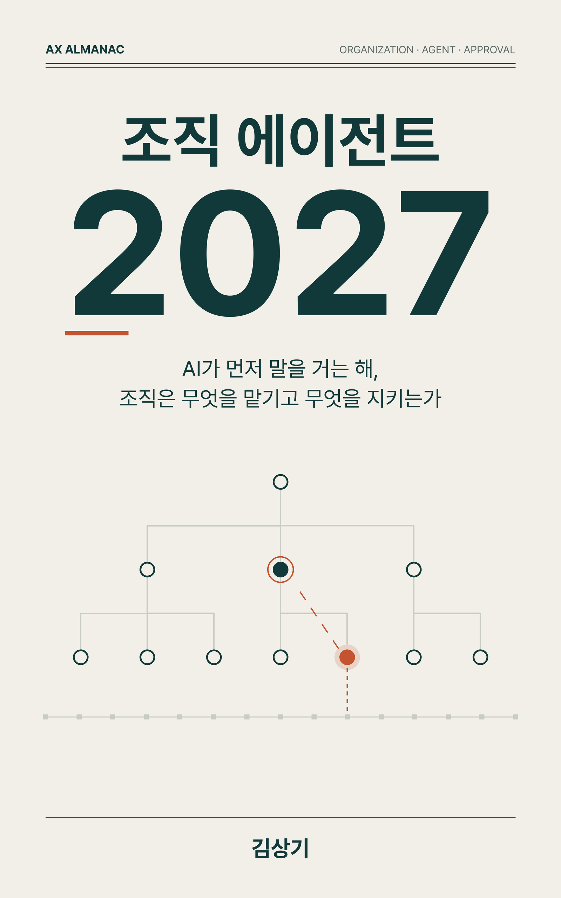
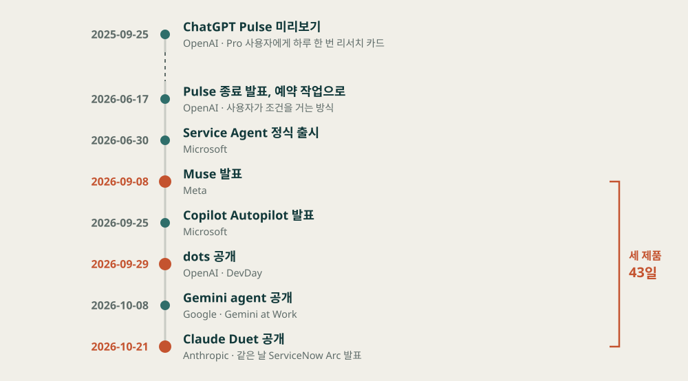
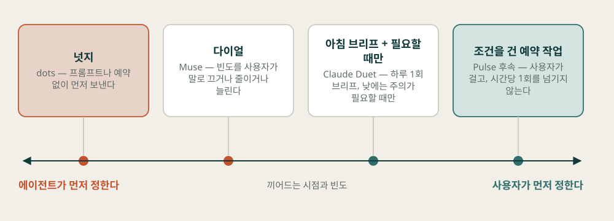
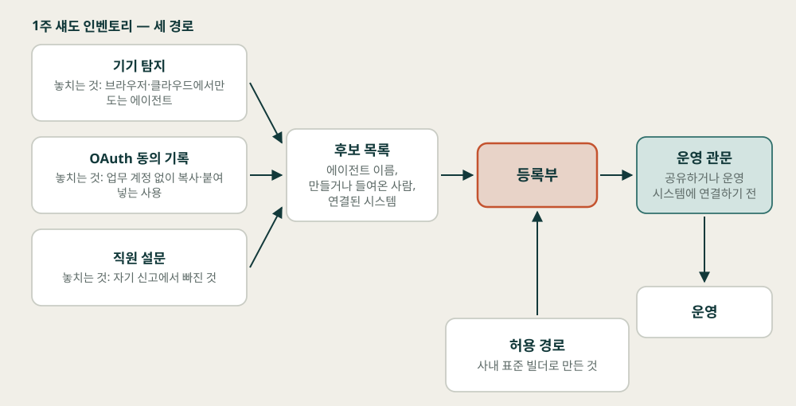
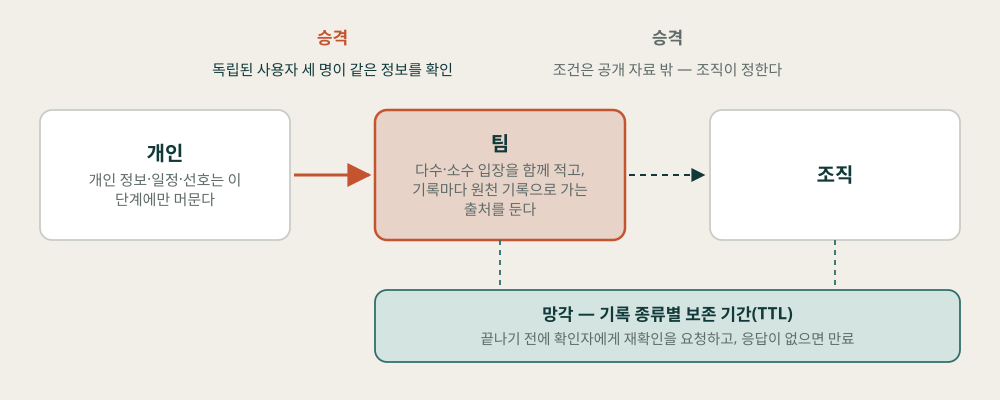
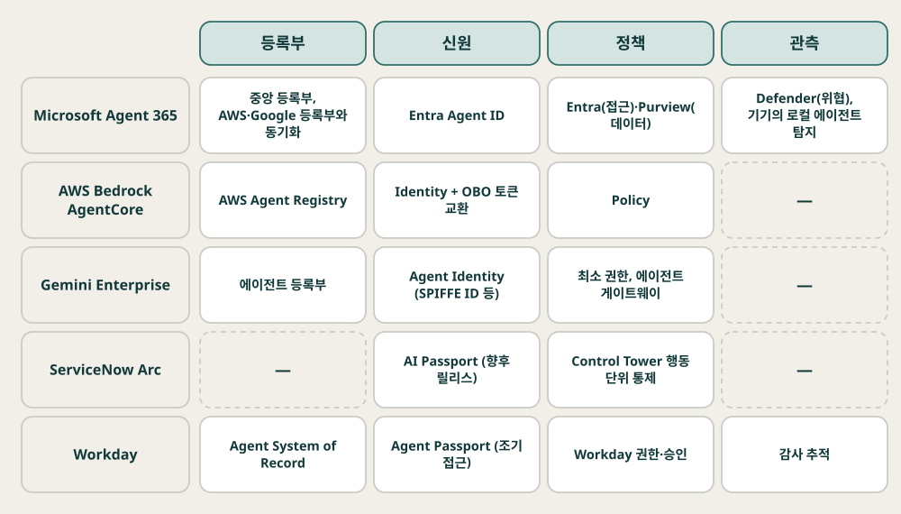
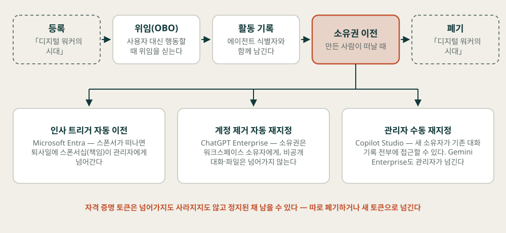
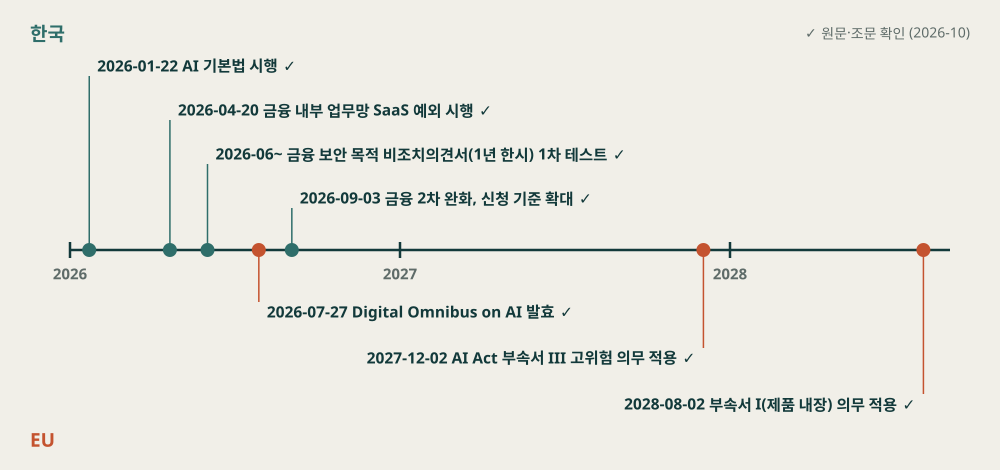
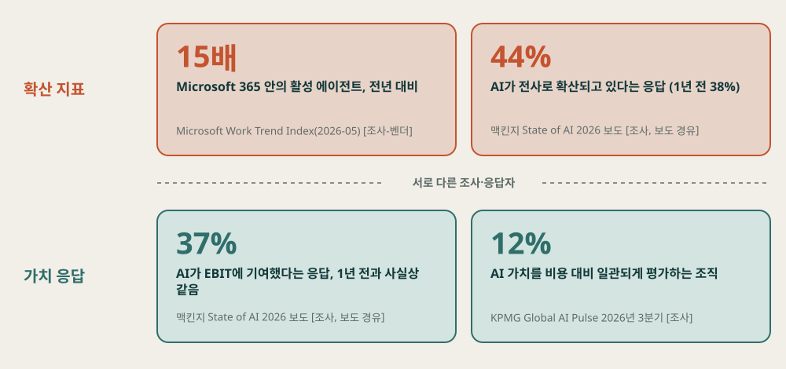

조직 에이전트 2027
AI가 먼저 말을 거는 해, 조직은 무엇을 맡기고 무엇을 지키는가
"AI가 먼저 말을 거는 시대에, 조직은 무엇을 에이전트에 맡기고 무엇을 지키는가."
— 이 책을 끌고 가는 질문

오늘은 두 숫자로 시작합니다
Microsoft 365 안에서 활성 에이전트는 1년 사이 15배가 됐다는데,
AI가 회사의 EBIT에 기여했다고 답하는 기업의 비율은 왜 1년째 그대로인가?
— 15배: Microsoft Work Trend Index(2026-05-05) [조사-벤더] · EBIT 기여 37%: 맥킨지 State of AI 2026 [조사, 보도 경유]
두 숫자는 다른 조사, 다른 응답자에게서 나왔습니다. 곧바로 비교할 수는 없지만, 2026년 한 해 자료를 모으면 같은 모양이 되풀이됩니다. 쓰는 사람과 에이전트의 수는 오르고, 돈이나 일의 구성으로 재는 지표는 움직이지 않는다.
조직이 지키는 것은 모델이나 화면이 아니라 다섯 가지 설계다
| 지키는 설계 | 정할 내용 | 장 |
|---|---|---|
| 맥락의 범위 | 에이전트가 어느 시스템에 연결되고, 무엇을 조직 기억으로 올리고 잊는가 | 3장 |
| 행동의 이름 | 에이전트의 행동이 누구의 신원으로 일어나고, 만든 사람이 떠나면 누가 넘겨받는가 | 4장 |
| 멈추는 지점 | 사람이 어디서 멈추게 하는가 — 계정 권한과 결정적 UI로 강제 | 5장 |
| 처리 위치 | 데이터 등급에 따라 어디서 처리하는가 — 로컬이면 통제 책임은 조직으로 | 6·7장 |
| 가치 기준 | 확산 지표와 가치 지표를 나누고, 에이전트마다 비용·절감 시간·재작업을 잰다 | 8장 |
다섯 가지 모두 모델을 바꿔도 조직에 남는 설계다. 이 답도 가설이라 H10-1(근거 강도 하~중)로 카드에 올렸다.
1~9장은 같은 세 칸으로 짰다
근거 표기는 셋이다 — 출처 성격([공식]·[조사-벤더]·[애널리스트]·[커뮤니티] 등), 확인 상태(✓ 원문 대조 · △ 보도·2차 경유), 근거 강도(카드에만, 강·중·하). 이 판본(v1.0.0)은 저자가 원고 전문을 검토하기 전에 낸 초안이다.
먼저 말을 거는 AI
에이전트가 묻기 전에 먼저 말을 걸고 직원이 직접 에이전트를 만들기 시작하면, 무엇이 먼저 바뀌는가?
- 1장. 먼저 말을 거는 에이전트
- 2장. 누구나 만드는 에이전트
43일 사이에 세 회사가 같은 종류의 제품을 냈다
| 항목 | Muse (Meta) | dots (OpenAI) | Claude Duet (Anthropic) |
|---|---|---|---|
| 발표일 | 2026-09-08 | 2026-09-29 (DevDay) | 2026-10-21 |
| 먼저 하는 행동 | 기억 기반 제안, 다이얼로 빈도 조절 | 프롬프트·예약 없이 넛지 | 아침 브리프 1회 + 주의가 필요할 때만 메시지 |
| 승인 | 민감 행동 전 확인, 결정적 UI 버튼 | 가장 민감한 행동은 사용자가 직접 수행 | 발송·결제·서명·삭제 전 승인, 증권 거래·계좌 간 이체는 승인해도 거부 |
| 가용성 | 미국, iOS·Android·웹 | Pro·Business Premium 포함, Enterprise 베타(기본 꺼짐) | 미국 Pro·Max 구독자 대상 연구 프리뷰 |
표 1-1 발췌, 2026년 10월 기준 [공식] ✓. 세 회사의 공식 문서가 가장 길게 설명한 대목은 언제 말을 걸지, 얼마나 자주 걸지, 무엇을 하기 전에 멈출지다.
능동성은 한 방향으로 가지 않았다

Pulse 종료(2026-06-17 발표) → 사용자가 조건을 거는 예약 작업 → 3개월 남짓 뒤 넛지형 dots [공식].
누가 먼저 정하는가 — 에이전트인가, 사용자인가

dots는 왼쪽 끝, 예약 작업은 오른쪽 끝. Muse와 Claude Duet은 그 사이에서 빈도와 시점을 조절한다.
끼어드는 시점이 수용을 가른다
PITCH에서 모델이 끼어든 이유의 93%는 관련성이었고, 기다림을 고려한 경우는 거의 없었다. 조직 전체에 알림 정책을 적용해 효과를 잰 연구는 이번 조사 범위에서 찾지 못했다.
끼어들기 정책 — 알림의 총량과 그 주인
표 1-2의 '처음 값 예시'는 이 책이 제안하는 출발값이며 효과를 검증한 수치가 아니다.
섀도 에이전트는 이미 숫자로 보인다
Forrester 수치는 아태 대기업의 3분의 1에 대한 예측이다. 모든 기업에서 공식 1개당 섀도 10개라는 뜻으로 읽으면 안 된다. 두 조사는 해당 제품을 파는 회사가 직접 했다.
1주 섀도 인벤토리 — 세 경로가 각각 놓치는 것

만들기는 넓게 열고, 공유하거나 운영 시스템에 연결하는 단계에 관문을 둔다.
가설 카드 — 2027년 말에 판정한다
가설이다 — 사실이 아니다. H2-2는 OpenAI Agent Builder 폐기 공지(2026-06-03, 공개 8개월 만) 사례 1건에 기댄다 [공식] ✓. 카드마다 반증 조건과 작은 실험이 있다.
조직 에이전트
먼저 말을 거는 에이전트를 직원 누구나 만들 수 있다면, 조직은 그 에이전트들을 무엇으로 묶는가?
- 3장. 조직이 기억하는 법
- 4장. 누구의 이름으로 일하는가
- 5장. 승인은 구조로
처음 막힌 벽은 권한이었다
개인 비서형 에이전트를 조직 에이전트로 넓혀 보려 했을 때 내가 처음 막힌 벽은 권한이었다. 조직 에이전트는 사내 시스템을 MCP로 붙여야 일할 수 있다. 그런데 MCP로 만들어 둔 사내 시스템이 아직 적었고, 그러다 보니 권한을 연결할 수 없었다.
— 저자 인터뷰 답(3장)
무엇을 기억하게 할지 고민하기도 전에, 에이전트가 읽을 수 있는 시스템이 적다는 문제가 먼저 걸렸습니다. 맥락은 연결된 시스템까지만 닿는다.
개인 비서형 에이전트와 조직 에이전트는 정할 항목부터 다르다
| 축 | 개인 비서형 | 조직 에이전트 | 조직이 정할 것 |
|---|---|---|---|
| 맥락 | 한 사람의 메일·일정·파일 | 연결된 사내 시스템과 팀의 협업 기록 | 연결할·연결하지 않을 시스템 목록, 연결 순서 |
| 권한 | 쓰는 사람의 권한 그대로 | 누구의 이름으로 어느 시스템에 닿는지 따로 설계 | 신원 방식, 연결별 읽기·쓰기 범위 |
| 기억 | 개인 대화 이력과 선호 | 개인·팀·조직 단계와 승격·출처·망각 규칙 | 승격 조건, 출처 표기, 보존 기간 |
| 틀렸을 때 | 그 사람의 일만 틀린다 | 틀린 관례가 여러 에이전트로 퍼질 수 있다(미심사 관찰) | 이견 기록, 정정 경로, 정정 책임자 |
표 3-1 발췌. 위에서 아래로 읽는다 — 맥락이 정해져야 권한을 설계할 대상이 생기고, 권한이 정해져야 기억에 무엇이 들어올지 알 수 있다.
무엇을 올리지 않을지부터 정한다

팀 기록은 독립 사용자 세 명이 확인해야 올라가고, 이견은 다수·소수 입장을 함께 적는다 [공식].
2026년, 벤더 다섯 곳이 제어면과 등록부를 냈다

Agent 365는 2026-05-01 GA, 사용자당 월 15달러 [공식] ✓. 점선 칸은 '이번 조사에서 확인하지 않음'이다.
에이전트는 누구의 이름으로 일하는가
나는 에이전트가 만든 사람의 권한으로 일해야 한다고 본다. 만든 사람의 권한과 1:1로 미러링되지 않으면 책임 소재가 불명확해지기 때문이다.
— 저자 인터뷰 답(4장)
제품들은 다른 길도 열어 두었습니다. 에이전트에게 사람과 별개인 신원을 주고 책임자(스폰서)를 붙이는 방식, 그리고 사용자의 위임을 함께 싣는 OBO입니다. 책은 저자 입장을 근거로 삼지 않고 세 방식을 나란히 놓고 따집니다.
신원 방식 비교 — 쓰는 사람의 범위로 고른다
| 기준 | 만든 사람 권한 미러링 | 별도 신원 + 스폰서 | 위임(OBO) |
|---|---|---|---|
| 행동 기록의 주어 | 만든 사람 한 명 | 에이전트 신원(책임은 스폰서) | 에이전트 신원과 대리된 사용자 둘 다 |
| 만든 사람이 떠나면 | 계정 비활성화와 함께 정지 — 업무가 끊긴다 | 계속 동작, 스폰서십 이전·재지정 필요 | 에이전트는 남고 그 사용자의 위임은 끝난다 |
| 남는 위험 | 넓은 권한, 여러 사람이 쓸 때 권한이 섞임 | 관리되지 않는 비인간 신원 | 위임 범위 설계 실수, 토큰이 남는 경로 |
| 맞는 경우 | 만든 사람 혼자 쓰는 개인 에이전트 | 여러 사람이 쓰는 팀·조직 에이전트 | 사용자 요청을 사용자 이름으로 처리 |
표 4-2 발췌. 저자 입장과 책의 분석이 만나는 지점은 책임자를 한 사람으로 고정하라는 요구다. 세 방식 가운데 어느 쪽이 사고를 더 줄이는지 비교한 연구는 이번 조사 범위에서 찾지 못했다.
사람이 떠나면 무엇이 넘어가는가

넘어가는 것은 책임·소유권·대화 기록으로 제품마다 다르고, 토큰은 정지된 채 남을 수 있다 [공식].
인계를 퇴사의 조건으로
만든 사람이 떠난 에이전트는 떠날 때 다른 사람에게 인계하는 절차가 필요했다. 말 그대로 인수인계다.
퇴직할 때 PC를 반납해야 퇴사 절차가 끝나는 것처럼, 자기가 만든 에이전트를 인계해야 떠날 수 있게 하자는 것이 내 주장이다.
— 저자 인터뷰 답(4장). 앞 문장까지가 경험이고, 뒤 문장은 설계 주장이다 — 시행해 본 제도가 아니다
공개 제품들은 넘기는 방식(이전형)이고, 저자의 제안은 넘기기 전에는 떠날 수 없게 막는 방식(차단형)입니다. 차단형을 구현한 공개 제품 기능은 이번 조사 범위에서 찾지 못했습니다.
승인 규칙이 프롬프트 한 줄에만 있으면

2026년 2월 OpenClaw 메일함 사고: "먼저 확인하라"는 지시에도 메일 200여 통 삭제·보관(당사자 게시, 미검증) [매체].
승인 3층 — 첫 질문은 '되돌릴 수 있는가'
| 행동 | 되돌릴 수 있나 | 배치 | 강제 장치 |
|---|---|---|---|
| 문서·메일 읽기, 요약, 사내 초안 | 가능 | 자율 허용 | 읽기 전용 계정, 활동 기록 |
| 외부 메일 발송, 고객 안내 | 어려움 | 실행 전 승인 | 결정적 UI(발송 직전 내용 표시 + 버튼) |
| 결제, 일정 금액 이상 구매, 계약 서명 | 어려움 | 실행 전 승인(한도 안은 사전 승인) | 금액 한도 정책, 결정적 UI |
| 운영 배포, 보안 설정·권한 변경 | 제한적 | 승인해도 금지 | 에이전트 계정에 권한 없음, 환경 분리 |
| 계좌 간 자금 이동, 증권 거래 | 불가 | 승인해도 금지 | 에이전트 계정에 권한 없음 |
표 5-2 발췌 — 예시, 벤더 공식 문서·IMDA 지침과 수록 사례·국내 증권사 공개 원칙에서 재구성. 저자가 운영한 조직의 실제 배치가 아니다.
아직 사례가 부족하다
세 층에 실제로 넣은 행동의 예를 묻는 인터뷰 질문에 내 답은 "아직 사례가 부족하다"였다. 내가 운영하는 공개 서비스 DEVOTEE에서는 에이전트가 하는 일을 승인 없이 그냥 실행했다. 나중에라도 이상한 점이 보이면 지우거나 다시 올리면 되는 일이었기 때문이다. 조직 안에는 그렇게 되돌릴 수 있는 업무가 많지 않을 것 같다는 것이 내 관찰이다.
— 저자 인터뷰 답(5장)
DEVOTEE를 그냥 실행해도 됐던 이유와, IMDA 지침에 실린 Dayos 사례가 IT 티켓의 60%를 사람 없이 맡긴 이유는 같습니다. 둘 다 되돌릴 수 있었습니다.
근거는 한 방향으로 모이지 않는다
결과가 갈린 조건은 과제가 좁은지, 사람이 판정 근거를 볼 수 있는지, 틀렸을 때 되돌릴 수 있는지다. 승인을 몇 번 받느냐가 결과를 가른다는 근거는 이번 조사 범위에서 찾지 못했다.
가설 카드 — 2027년 말에 판정한다
가설이다 — 사실이 아니다. H5-2의 40%는 2025년 6월 Gartner의 '프로젝트 40% 이상 취소' 전망과 다른 예측이다. 하나는 프로젝트를, 하나는 기업을 센다.
어디서, 어떤 규칙으로
맥락과 신원과 승인의 구조를 정했다면, 그 구조는 어느 위치에서 돌아가고 어떤 제도 위에 놓이는가?
- 6장. 로컬과 클라우드 사이
- 7장. 한국의 2027
로컬에 둔 모델이 인터넷에 열려 있었다
두 보고서는 개인 실험 장비와 기업 장비를 구분해 세지 않았다. '기업 로컬 LLM의 몇 %가 노출됐다'로 옮길 수 없다. 로컬 배치가 바꾸는 것은 통제 책임을 지는 주체다.
처리 위치는 네 갈래 — 위치마다 책임이 다르다
| 위치 | 통제 책임 | 비용 변수 | 대표 위험 |
|---|---|---|---|
| 온디바이스 | 기기 관리(조직) + 모델·OS(플랫폼) | 기기 교체 주기, 모델 크기 제약 | 기능 제한(단일 턴 등), 기기 분실 |
| 사내(온프레미스) | 조직 전부(인증·패치·감시·라이선스) | GPU 가동률, 운영 인력 | 무인증 엔드포인트, 구버전 취약점, 문맥 창 축소 |
| 사설 클라우드 | 조직 + 클라우드 사업자(계약으로 나눔) | 예약 용량, 피크/중앙값 비율 | 계약·설정 오류, 책임 경계 불명확 |
| 퍼블릭 클라우드 | 사업자 + 조직(계정·데이터 반출 통제) | 토큰 단가, 호출량 증가 속도 | 비용 예측 불가, 데이터 반출, 라우터 의존 |
표 6-1 — 2026년 10월 기준 공개 자료로 재구성한 예시. 같은 등급 안에서 허용 위치가 둘 이상일 때만 비용·지연으로 고른다.
데이터 등급에서 배치 위치로

반출 금지는 사내까지, 내부 자료는 사설 클라우드까지, 공개 자료만 퍼블릭 클라우드까지(예시).
망분리에서 등급으로 — 한국과 EU의 일정

N2SF 1.0은 정보를 기밀·민감·공개(C/S/O)로 나눈다. EU 부속서 III 고위험 의무는 2027-12-02 [공공] ✓.
제도가 바뀌면 다시 열 결정
| 제도 (시점) | 바뀐 것 | 조직이 다시 볼 결정 |
|---|---|---|
| 국정원 N2SF 1.0 (2025-09-30) | 일률적 망분리 → C/S/O 등급별 통제 | 사내 데이터 등급표를 C/S/O에 매핑, 등급별 허용 배치 위치 |
| 금융 SaaS 망분리 예외 (2026-04-20) | 내부 업무망 SaaS 허용(고유식별·개인신용정보 처리 제외) | 업무를 코어/비코어로 나누기, SaaS별 평가 일정 |
| 금융 생성형 AI 비조치의견서 (2026-05 발표) | 보안 목적 한정 1년 한시 허용 | 보안 외 용도 도입 시점, 1년 뒤 갱신 여부 대비 |
| AI 기본법 (2026-01-22) | 고영향 AI 판단, 생성형 AI 투명성 | 해당 영역 에이전트 목록, 사람의 최종 결정 기록 |
표 7-1 발췌, 2026년 10월 기준 [공공] ✓. '금융권 망분리 완화로 생성형 AI가 허용됐다'가 아니다 — 4월 세칙은 SaaS 한정이었고, 생성형 AI는 보안 목적 한시 허용으로 따로 들어왔다.
가설 카드 — 2027년 말에 판정한다
가설이다 — 사실이 아니다. H6-1과 H7-3(N2SF식 등급이 민간 대기업 기준으로 번진다)은 같은 현상을 기술과 제도 쪽에서 본 카드라 함께 판정한다.
무엇이 남는가
에이전트를 쓰는 사람과 에이전트의 수가 늘어나면 성과도 따라오는가? 그리고 조직이 사 쓰던 소프트웨어는 어떻게 되는가?
- 8장. 넓게 퍼졌는데 성과는 제자리
- 9장. SaaS는 사라지는가
- 10장. 맡길 것과 지킬 것
확산 지표는 오르고, 가치 지표는 그대로였다

EBIT 기여 37%는 맥킨지 [조사, 보도 경유]. 네 숫자는 조사가 달라 위아래를 곧바로 비교할 수 없다.
개인은 빨라졌지만, 일의 짜임은 그대로였다
| 연구 | 표본 | 결과 | 판본·심사 |
|---|---|---|---|
| Brynjolfsson, Li, Raymond | 상담원 5,172명 | 시간당 해결 건수 평균 +15% | QJE 2025 [논문-심사] |
| Dell'Acqua et al. | BCG 컨설턴트 758명 | 경계 안 12.2% 더 많이·25.1% 더 빨리, 경계 밖 정답 확률 19% 낮음 | Organization Science 2026 [논문-심사] |
| METR (Becker et al.) | 숙련 개발자 16명 | 완료 시간 +19%(느려짐), 사전 예측은 −24% | arXiv 2025 [논문-미심사] |
| Dillon, Jaffe, Immorlica, Stanton | 66개 기업 7,137명, 6개월 | 이메일 시간 주 2시간 감소, 과업의 양·구성 변화는 검출 안 됨 | arXiv 2025 [논문-벤더, 미심사] |
표 8-1 발췌. 조직 단위로 에이전트를 배치하고 무작위로 비교한 실험은 이번 조사 범위에서 찾지 못했다. '조직을 다시 설계하면 성과가 난다'는 아직 가설이다.
우리는 아직 발견해야 하는 단계다
경영진이 실제로 본 지표가 무엇이었는지, 확산 지표와 성과 지표가 어긋났던 장면이 있었는지 묻는 인터뷰 질문에 나는 좋은 사례를 해외나 선진 사례에서 찾아 달라고 답했다. 우리는 아직 그것을 발견해야 하는 단계라서다.
— 저자 인터뷰 답(8장)
그래서 8장의 사례는 전부 해외 공개 자료에서 왔습니다. JPMorgan은 체감 시간을 NPV에서 뺐고, Klarna와 Commonwealth Bank는 비용 추정 하나에 기댄 결정을 되돌렸습니다.
비용·가치 원장 3칸 — 에이전트별, 분기마다
| 칸 | 무엇을 적나 | 어디서 재나 | 주의 |
|---|---|---|---|
| 비용 | 모델·플랫폼 사용료, 연동·유지보수에 든 사람 시간 | 청구서, 운영 담당자 작업 기록 | 사람 시간을 빼면 비용이 낮게 잡힌다 |
| 절감 시간 | 도입 전후 같은 과업의 처리 시간 차이 | 업무 시스템 기록(티켓·결재·처리 시각) | 설문 체감치는 넣지 않는다 |
| 재작업 | 사람이 고치거나 되돌린 건수와 시간, 사람에게 넘어온 예외 건수 | 승인 로그의 거부·수정 기록 | 재작업을 빼면 절감 시간이 과대평가된다 |
표 8-2. 세 칸 가운데 하나라도 빈 에이전트는 가치 보고에 넣지 않는다. 확산 지표는 따로 한 묶음으로, 가치 지표의 정의와 집계는 재무 조직이 맡는 편이 낫다.
SaaS의 세 계층 — 압력을 받는 곳

벤더들은 데이터·권한 계층을 지키겠다고 발표했다. 그 전략이 통했는지는 아직 확인되지 않았다.
사내 SaaS를 세 갈래로 나누기
| 분류 | 예 | 받을 압력 | 재계약 때 확인할 것 |
|---|---|---|---|
| 기록 시스템(SoR) | ERP·HR·CRM 원장, 재무 | 화면 사용은 줄고 API·에이전트 경유 접근이 는다 | 에이전트 접근 API·권한 모델, 과금이 좌석인지 호출량인지 |
| 주변부 UI형 | 워크플로 도구, 어드민, BI 대시보드, 폼 | 사내 앱·에이전트로 대체 후보 | 실제 쓰는 기능 비중, 대체 시 유지보수 주인 |
| 범용 유틸 | 문서·메신저·화상회의 | 생산성 스위트의 에이전트 기능과 겹침 | 번들 안 중복 기능, 사용자당 AI 추가 과금 |
표 9-2. Bain 분석(B2B SaaS 약 200개사): AI 과금을 도입하는 벤더 5곳 가운데 약 4곳이 용량 모델 [애널리스트]. Retool 조사의 35%가 이미 SaaS 하나 이상을 자체 구축으로 바꿨다 [조사-벤더].
가설 카드 — 2027년 말에 판정한다
가설이다 — 사실이 아니다. H8-1의 맥킨지 수치는 원문을 대조하지 못하고 보도로 확인한 값이다. 가장 강한 반대 가설(작은 SaaS 소멸·거대 SoR 통합·좌석 단가 상승)도 점검표에서 함께 채점한다 [커뮤니티].
맡길 것과 지킬 것

맡기는 쪽은 되돌릴 수 있고, 기록이 남고, 능력 안에 드는 과제다. 직무보다 과제 단위로 정한다.
내가 가장 확신하는 가설
2027년에 대해 가장 확신하는 가설 하나를 묻는 인터뷰 질문에 나는 이렇게 답했다. AI가 일하고, 사람은 승인하고 검토하는 업무의 비중이 엄청 높아질 것 같다.
— 저자 인터뷰 답(10장) → 가설 카드 H10-2
지지 근거: 덴마크 노동 기록에서 AI 감독 같은 새 과업이 먼저 생기는 재편 [논문-미심사], AI를 많이 쓰는 팀의 PR 리뷰 시간 91% 증가 — Faros AI [조사-벤더].
가설 — 검토는 늘어날까, 예외로 좁아질까
이해관계: Anthropic은 이 책의 리서치·초안에 쓰인 도구를 만든 회사다. 양이 늘면 받아들임, 양은 줄고 검토가 예외와 되돌릴 수 없는 지점에 모이면 범위 축소 — 판정 기준을 미리 적어 두었다(근거 강도 중).
질문 하나, 답 하나
AI가 먼저 말을 거는 시대에, 조직은 무엇을 에이전트에 맡기고 무엇을 지키는가.
2027년에 조직이 지키는 것은 모델이나 화면이 아니라 다섯 가지 설계다.
— 맥락의 범위 · 행동의 이름 · 멈추는 지점 · 처리 위치 · 가치 기준
이 답도 가설입니다. 다섯 가지 설계가 성과를 가른다는 것을 직접 비교한 연구는 이번 조사 범위에서 찾지 못했고, 그래서 H10-1(근거 강도 하~중)로 카드에 올렸습니다.
가설 카드 33장을 1년 뒤 채점한다
| ID | 가설 (발췌) | 처음 근거 강도 | 판정 |
|---|---|---|---|
| H1-1 | 기본 끼어들기 방식은 조건 기반·예산 제한·다이얼형에 가까워진다 | 중 | 받아들임 · 범위 축소 · 보류 · 버림 |
| H5-2 | 2027년까지 기업 40%가 자율 에이전트를 강등·폐기한다(Gartner) | 중 | 받아들임 · 범위 축소 · 보류 · 버림 |
| H6-3 | 2027년 안에 기업 사내 로컬 LLM 노출 사고가 공개 보도된다 | 중~강 | 받아들임 · 범위 축소 · 보류 · 버림 |
| H10-2 | AI가 일하고, 사람은 승인·검토하는 업무의 비중이 엄청 높아진다 | 중 | 받아들임 · 범위 축소 · 보류 · 버림 |
받아들임 = 반증 조건이 일어나지 않고 지지 근거가 더해짐 · 범위 축소 = 일부 업종·규모·제품에서만 성립 · 보류 = 판정할 자료가 없음(무엇이 없었는지 적는다) · 버림 = 반증 조건이 관찰됨. 저자는 이 점검표를 채워 2028년판을 낼 계획이다.
2027년 1월에 할 일은 작다
- 부록 A에서 우리 조직에 해당하는 카드 다섯 개를 고른다.
- 카드마다 '작은 실험' 열의 기록을 맡을 담당자 이름을 메모 칸에 적는다.
- 표 10-1의 '조직이 지키는 것' 아홉 행 옆에 그 결정을 맡은 사람의 이름을 적는다. 이름이 빈 행부터 담당자를 정한다.
- H10-2를 고른다면, 첫 기록은 이번 달 승인 로그에서 1초 안에 승인된 건수다.
1월에 기록을 시작한 카드는 12월에 판정할 수 있고, 12월에 처음 찾아본 카드는 보류로 끝나기 쉽다.
조직 에이전트 2027
AI가 먼저 말을 거는 해, 조직은 무엇을 맡기고 무엇을 지키는가
초안 판본 v1.0.0 — 저자 전문 검토 전. 틀린 곳을 알려 주면 다음 판본에서 고치고 판 이력에 남깁니다.
CC BY-NC-SA 4.0